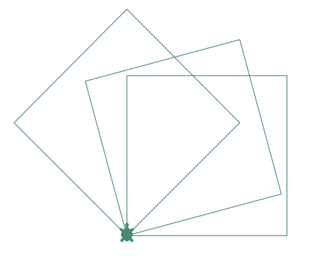

1. Présentation de la « tortue graphique »
La « tortue graphique » a été inventée à la fin des années 60 par Seymour Papert et ses collègues du MIT (célèbre université américaine). , pour permettre de rendre l’apprentissage de la programmation plus ludique. Elle faisait alors partie du langage Logo, spécifiquement développé pour être utilisé par de jeunes enfants.
Le nom « tortue graphique » suggère la façon dont les figures géométriques vont être dessinées à l’écran.
On imagine une tortue capable de se déplacer sur une surface horizontale recouverte de sable et très à l’écoute de la personne qui la nourrit. Lorsque cette tortue se déplace, à la demande de sa (ou son) propriétaire, sa queue laisse une trace sur le sable. Parallèlement, cette tortue peut aussi se déplacer en gardant sa queue en l’air, de façon à ne laisser aucune trace à l’écran.
Les consignes passées à cette tortue permettent donc de tracer des figures géométriques simples mais aussi d’autres relativement complexes.
2. Premiers mouvements dans la console
Lancer le programme Thonny.
Dans l’interpréteur interactif, entrez l’instruction :
import turtleUne flèche doit apparaitre à l’écran.Entrez l’instruction :
tortue_1 = turtle.Turtle()Quel est l’effet de cette commande ?Entrez l’instruction :
tortue_1.shape("turtle")Quel est l’effet de cette commande ?Entrez l’instruction :
tortue_1.forward(25)Que venez-vous de demander de faire à la tortue ? Notez l’effet de cette commande.
Que représente le nombre compris entre les deux parenthèses ? Dans quelle unité est-il exprimé ?
Entrez la commande :
tortue_1.left(30)5.1. Que venez-vous de demander de faire à la tortue ? Notez l’effet de cette commande.
5.2. Que représente le nombre compris entre les deux parenthèses ? Dans quelle unité est-il exprimé ?
Vous devez aussi absolument connaître deux instructions supplémentaires :
tortue_1.backward()ettortue_1.right(). Expérimentez ces deux commandes et notez leurs effets. Utilisez différents arguments entiers.
Remarque 1. Si vous souhaitez réinitialiser l’écran, ce qui aura pour effet de repositionner la tortue à sa position de départ, utilisez l’instruction : tortue_1.reset()
Remarque 2. Si vous souhaitez seulement annuler les effets de la dernière instruction, utilisez l’instruction : tortue_1.undo()
3. Définition des premières fonctions graphiques
Exercice 1
Le programme suivant permet de tracer à l’écran un rectangle. Écrire les instructions du corps de la fonction permettant d’effectuer ce tracé.
Vous veillerez à utiliser le moins d’instructions possible.
import turtle
def trace_rectangle(tortue: "Turtle", longueur: int, largeur: int) -> None:
"""
Dessine à l'écran à l'aide de la tortue passée en argument
un rectangle de longueur et largeurs passées en argument.
Le dessin est effectué à partir de la position de la tortue
lorsque la fonction est appelée.
"""
.................................
.................................
.................................
.................................
.................................
tortue_1 = turtle.Turtle()
longueur = 300
largeur = 200
trace_rectangle(tortue_1, longueur, largeur)
turtle.exitonclick() # Empêche la fenêtre de se fermer automatiquement à la fin du tracéSolution
import turtle
def trace_rectangle(tortue: "Turtle", longueur: int, largeur: int) -> None:
"""
Dessine à l'écran à l'aide de la tortue passée en argument
un rectangle de longueur et largeurs passées en argument.
Le dessin est effectué à partir de la position de la tortue
lorsque la fonction est appelée.
"""
for i in range(2):
tortue.forward(longueur)
tortue.left(90)
tortue.forward(largeur)
tortue.left(90)
tortue_1 = turtle.Turtle()
longueur = 300
largeur = 200
trace_rectangle(tortue_1, longueur, largeur)
turtle.exitonclick() # Empêche la fenêtre de se fermer automatiquement à la fin du tracéExercice 2
Modifier le programme suivant de façon à ce qu’il trace à l’écran les trois carrés de la figure ci-dessous :

import turtle
def trace_rectangle(tortue: "Turtle", longueur: int, largeur: int) -> None:
"""
Dessine à l'écran à l'aide de la tortue passée en argument
un rectangle de longueur et largeurs passées en argument.
Le dessin est effectué à partir de la position de la tortue
lorsque la fonction est appelée.
"""
.....................
.....................
.....................
.....................
.....................
tortue_1 = turtle.Turtle()
tortue_1.shape("turtle")
tortue_1.color("aquamarine4")
longueur = 200
largeur = 200
nbre_carres = 3
angle_entre_carres = 15
..................... :
.....................
.....................
turtle.exitonclick() # Empêche la fenêtre de se fermer automatiquement à la fin du tracéSolution
import turtle
def trace_rectangle(tortue: "Turtle", longueur: int, largeur: int) -> None:
"""
Dessine à l'écran à l'aide de la tortue passée en argument
un rectangle de longueur et largeurs passées en argument.
Le dessin est effectué à partir de la position de la tortue
lorsque la fonction est appelée.
"""
for i in range(2):
tortue.forward(longueur)
tortue.left(90)
tortue.forward(largeur)
tortue.left(90)
tortue_1 = turtle.Turtle()
tortue_1.shape("turtle")
tortue_1.color("aquamarine4")
longueur = 200
largeur = 200
nbre_carres = 3
angle_entre_carres = 15
for i in range(nbre_carres):
trace_rectangle(tortue_1, longueur, largeur)
tortue_1.left(angle_entre_carres * (i + 1))
turtle.exitonclick() # Empêche la fenêtre de se fermer automatiquement à la fin du tracéRemarque. Consultez l’adresse suivante pour découvrir les couleurs utilisables : http://www.tcl.tk/man/tcl8.5/TkCmd/colors.htm.
4. Liste des commandes permettant de guider la tortue
4.1. Instructions pour commander un déplacement
| Nom de la méthode | Description |
|---|---|
tortue.forward(distance) |
Avance la tortue de la distance passée en argument dans la direction selon laquelle la tortue est orientée. Le résultat de cette action dépend donc de l’état de la tortue. |
tortue.backward(distance) |
Recule la tortue de la distance passée en argument dans la direction selon laquelle la tortue est orientée. Le résultat de cette action dépend donc de l’état de la tortue. |
tortue.right(angle) |
Tourne la tortue d’un angle angle (exprimé en degrés) dans le sens opposé au sens trigonométrique à partir de la direction de la tortue. Le résultat de cette action dépend donc de l’état de la tortue. |
tortue.left(angle) |
Tourne la tortue d’un angle angle (exprimé en degrés) dans le sens trigonométrique à partir de la direction de la tortue. Le résultat de cette action dépend donc de l’état de la tortue. |
tortue.setposition(x, y) |
Déplace la tortue au point de coordonnées $(x,y)$ passées en argument. Ne modifie pas l’orientation de la tortue. Le résultat de cette action ne dépend donc pas de l’état de la tortue. |
tortue.setx(x) |
Donne à l’abscisse $x$ de la position de la tortue la valeur x. Ne modifie pas la valeur de l’ordonnée $y$. Le résultat de cette action ne dépend donc pas de l’état de la tortue. |
tortue.sety(y) |
Donne à l’ordonnée $y$ de la position de la tortue la valeur y. Ne modifie pas la valeur de l’abscisse $x$. Le résultat de cette action ne dépend donc pas de l’état de la tortue. |
tortue.setheading(angle) |
Donne à l’angle (exprimé en degrés) entre la droite sur laquelle la tortue s’appuie et l’axe horizontal la valeur angle. Les valeurs remarquables sont : 0° ou Est, 90° ou Nord, 180° ou Ouest, 270° ou Sud. Le résultat de cette action ne dépend donc pas de l’état de la tortue. |
tortue.home() |
Transporte la tortue au centre de l’écran, origine des coordonnées. |
tortue.dot(size, color) |
Dessine un point de diamètre size, de couleur color. Les arguments sont optionnels. |
tortue.circle(radius) |
Dessine un cercle de rayon radius pixels à partir de la position de la tortue. Le centre du cercle est radius pixels à gauche de la position de la tortue, perpendiculairement à sa direction. |
tortue.undo() |
Annule la dernière action réalisée par la tortue. |
4.2. Modification ou accès à l’état de la tortue graphique
| Nom de la méthode | Description |
|---|---|
tortue.position() |
Retourne les coordonnées $(x,y)$ (En fait il s’agit d’un vecteur de type Vec2D) de la position de la tortue. |
tortue.speed(speed) |
Retourne ou modifie la valeur de la vitesse de déplacement de la tortue. Si aucun argument n’est fourni, la valeur de la vitesse est retourneé. Pour modifier la valeur de la vitesse, l’argument doit être un entier compris entre 0 (le plus rapide) et 1 (le plus lent). |
tortue.towards(x, y) |
Retourne l’angle que fait la direction selon laquelle est orientée la tortue et la droite qui relie la tortue au point de coordonnées $(x,y)$ passé en argument. Cette valeur dépend donc de la direction de la tortue. |
tortue.xcor() |
Retourne la coordonnée $x$ de la position de la tortue. |
tortue.ycor() |
Retourne la coordonnée $y$ de la position de la tortue. |
tortue.heading() |
Retourne l’angle que fait la direction selon laquelle est orientée la tortue et l’axe horizontal, origine des angles. |
tortue.distance(x, y) |
Retourne la distance entre la position de la tortue et le vecteur passé en argument. Comme la position d’une tortue est un vecteur de type Vec2D, l’argument peut être une tortue. La méthode retourne alors la distance entre les deux tortues. |
tortue.pendown() |
La queue de la tortue traine au sol ; une marque apparait à l’écran lors de ses déplacements. |
tortue.penup() |
La queue de la tortue est relevée ; aucune marque n’apparait à l’écran lors de ses déplacements. |
tortue.pensize(width) |
Positionne la largeur du trait à la valeur width, un entier (10 est déjà un trait épais). |
tortue.isdown() |
Retourne True si la queue est baissée, False sinon. |
tortue.hideturtle() |
N’affiche pas la tortue (ou la marque qui représente la tortue) à l’écran. |
tortue.show() |
Affiche la tortue (ou la marque qui représente la tortue) à l’écran. |
tortue.isvisible() |
Retourne True si la tortue (ou la marque qui la représente) est visible à l’écran, False sinon. |
tortue.shape(name) |
Permet de choisir la forme de la marque qui représente la tortue. Les formes pré-exsistantes sont : "arrow", "turtle", "circle", "square", "triangle", "classic". |
4.3. Quelques commandes supplémentaires
| Nom de la méthode | Description |
|---|---|
tortue.reset() |
Réinitialise le dessin : la tortue est repositionnée au centre de l’écran, ses attributs sont effacés et toute marque à l’écran supprimée. |
tortue.clear() |
Supprime le dessin mais ne modifie ni la position de la tortue, ni son état. |
tortue.write(text) |
Écrit le texte text à l’écran. |